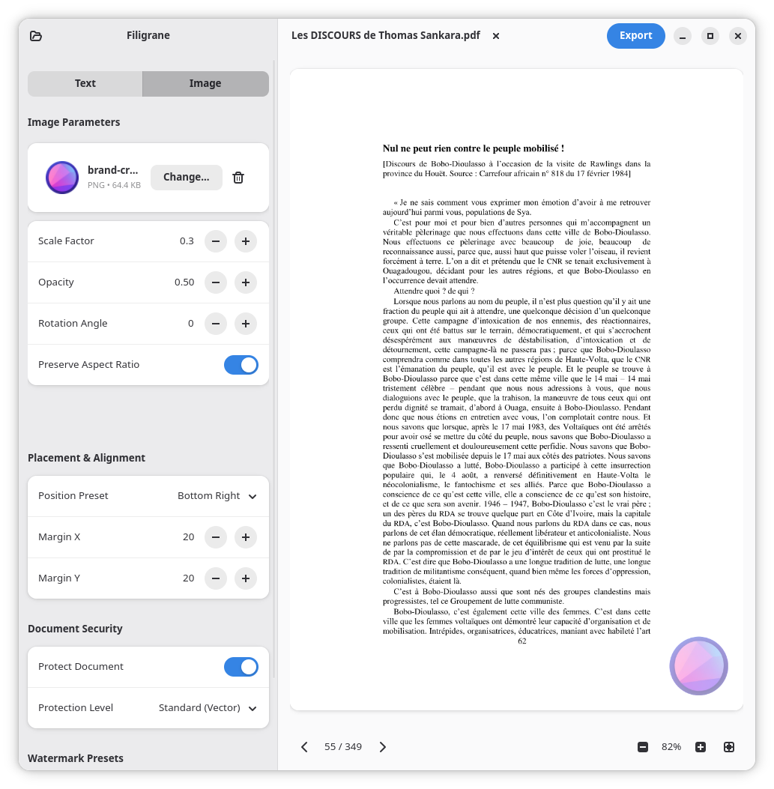

Stamp your PDFs. Keep them yours.
Filigrane is a native GNOME app for marking PDF documents with text and image watermarks. Preview every change live, place it exactly where you want it, then lock it down so it stays there.
flatpak install flathub io.gitlab.demsking.filigrane
Built for precision, not guesswork
Everything you need to mark, brand, and protect a document, without leaving the GNOME desktop.
Text Watermarks
Set the font, size, color, opacity, and rotation angle. Add bold, italic, or underline to match the tone of the document.
Image & Logo Watermarks
Drop in a PNG, SVG, or JPEG. Scale it, rotate it, and lock the aspect ratio so your mark stays true at any size.
Placement Presets
Center, corner, or tiled grid — pick a preset or set exact X/Y coordinates by percentage for pixel-level control.
Anti-tamper Security
Protect the result with AES-256 permission encryption so the watermark can't just be lifted out in Acrobat or Inkscape.
Live Preview
See the watermark on the actual page, across every page of a multi-page PDF, before you commit to saving anything.
Native GNOME & Libadwaita
Built with GTK4, following GNOME's Human Interface Guidelines — with proper dark and light mode support out of the box.
From draft to protected, in one pass
A text mark, an image mark, and the preferences panel that governs how every document gets treated.
Text, placed exactly
Color, opacity, and rotation, adjusted live against the real page.

Logos that scale cleanly
Aspect ratio locked, margins set, corner presets for consistent branding.
Presets you set once
Save a watermark configuration and reuse it across every document that needs it.
Install Filigrane
Choose your preferred method to install Filigrane on your Linux system.
Option 1: Flathub repository
Install directly from Flathub to receive automatic updates and isolated sandboxing.
flatpak install flathub io.gitlab.demsking.filigrane
flatpak run io.gitlab.demsking.filigrane
Option 2: Direct Flatpak bundle
Download the standalone .flatpak file built
directly by our GitLab CI pipeline.
flatpak install filigrane.flatpak